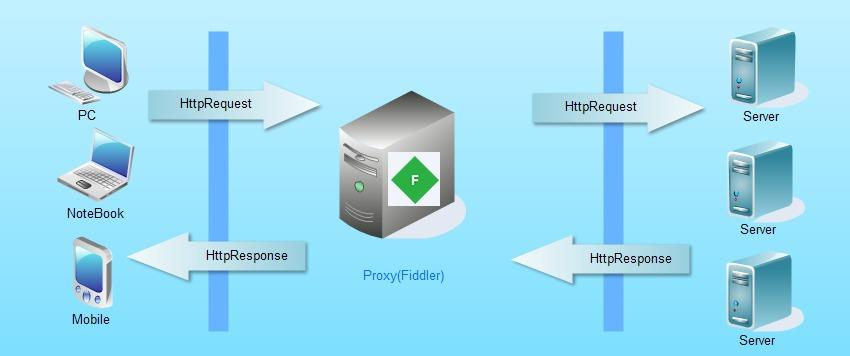
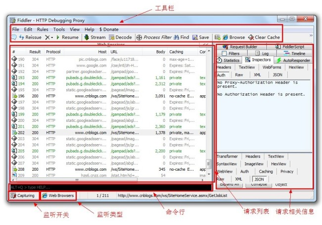
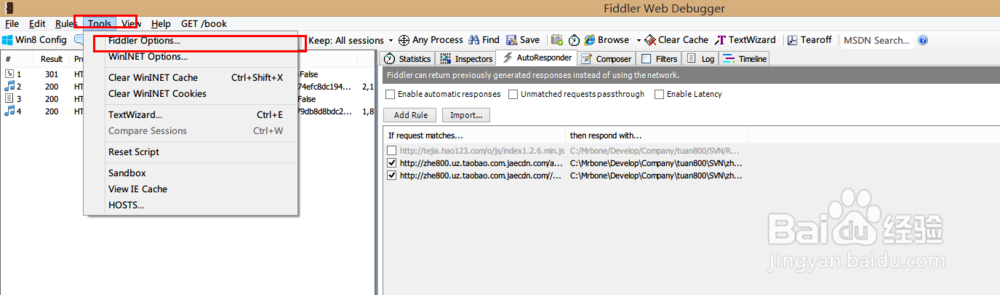
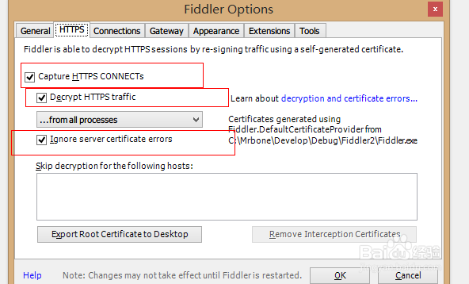
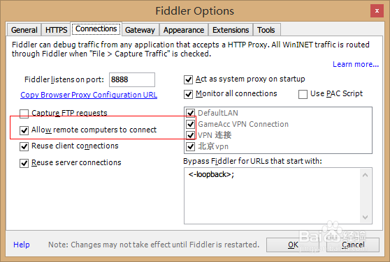
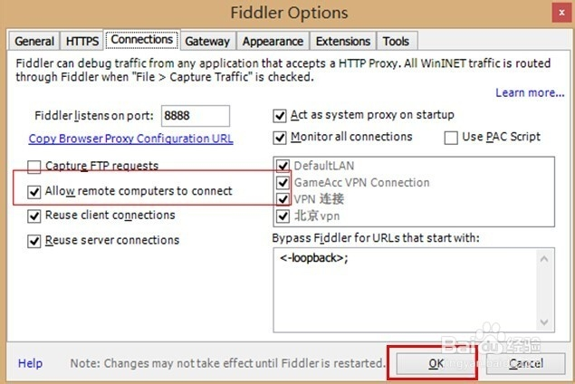

17. Fiddler抓包工具
1. Fiddler抓包工具：
Fiddler（中文名称：小提琴）是一个HTTP的调试代理，以代理服务器的方式，监听系统的Http网络数据流动
Fiddler是一个http协议调试代理工具，它能够记录并检查所有你的电脑和互联网之间的http通讯，设置断点，查看所有的“进出”Fiddler的数据（指cookie,html,js,css等文件，这些都可以让你胡乱修改的意思）。
Fiddler 要比其他的网络调试器要更加简单，因为它不仅仅暴露http通讯还提供了一个用户友好的格式。
文档地址：http://docs.telerik.com/fiddler/configure-fiddler/tasks/configurefiddler
运行过程：

- 操作界面：

2. Fiddler配置过程：
- 安装好后打开fiddler→选择 Tools >Fildder Options > Https

- https 勾选下列选项

- Connection勾选允许远程连接

- 设置完成后点击下面的【OK】按钮保存

- 我们在刚开始进入Fildder的界面上，使用手机或者电脑网上冲浪就可以看到我们的http请求了。